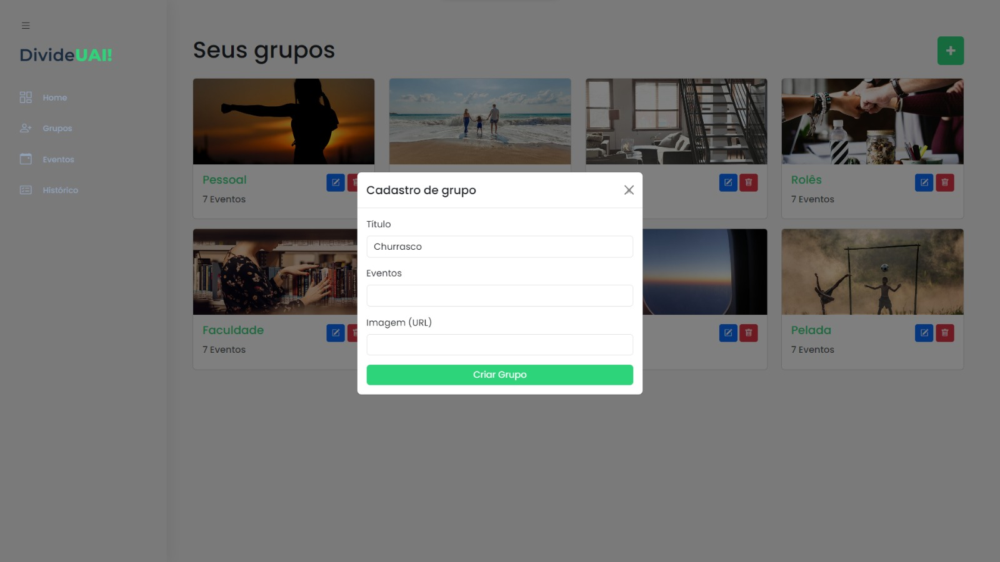
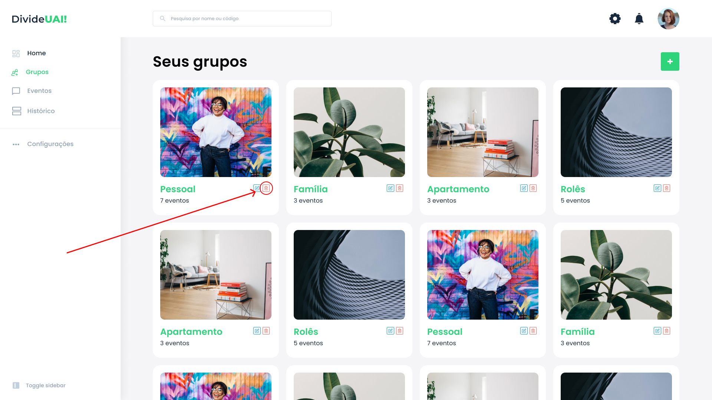
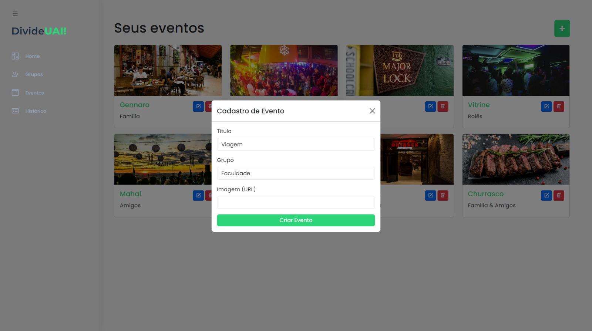
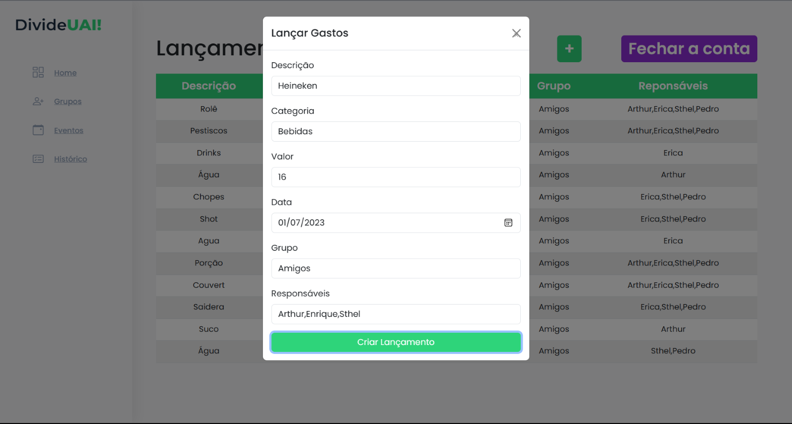
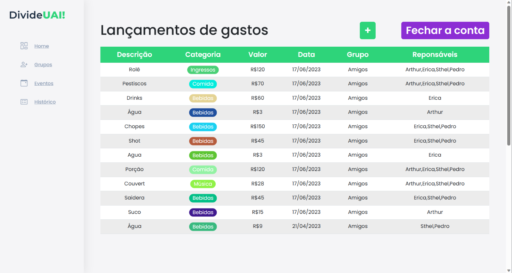
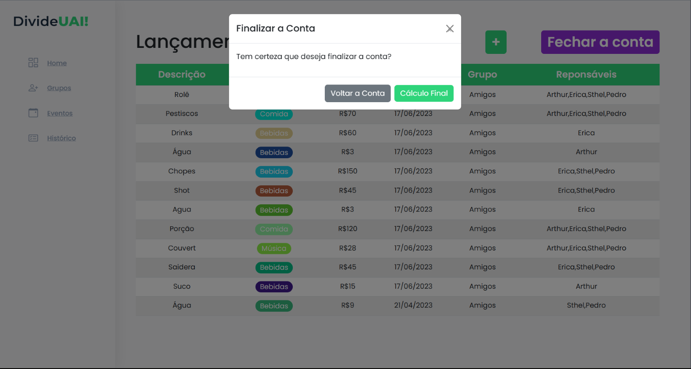
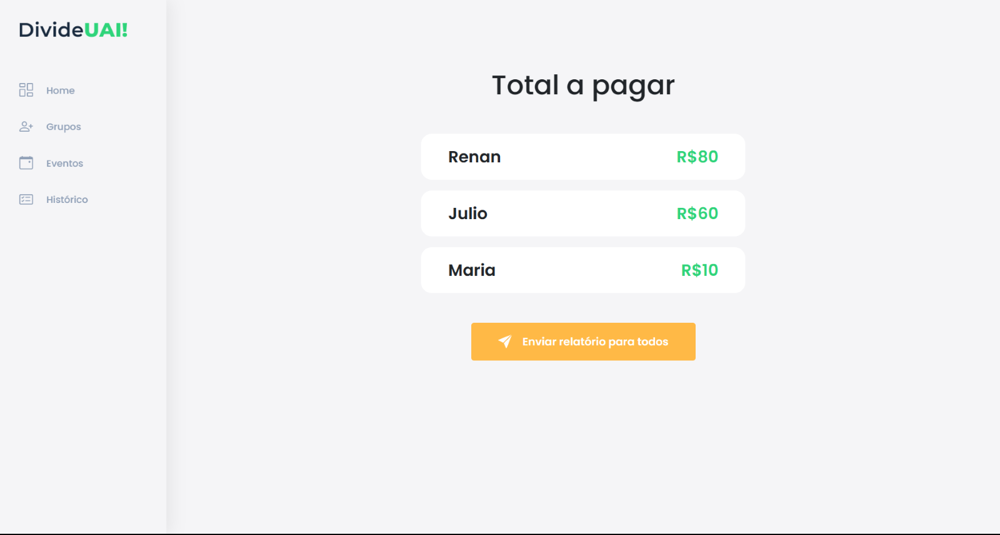

DivideUai!
O propósito do projeto consiste em criar uma plataforma digital que viabilize de forma mais ágil e eficiente a distribuição de custos entre um grupo de pessoas. Essa plataforma possibilitará aos usuários o registro das despesas compartilhadas, atribuindo-as aos respectivos responsáveis por cada pagamento. Com base nessas informações, a plataforma realizará os cálculos necessários para fornecer a cada participante um valor preciso a ser pago e o beneficiário correspondente.
Informações sobre o projeto.
O vídeo a seguir traz uma breve apresentação da DivideUai!
Permite a criação de usuário e acesso ao sistema.
Permite a criação de grupos.

Permite a visualização dos grupos criados.
Permite a edição dos grupos criados.
Permite a exclusão dos grupos criados.

Permite a criação de eventos.

Permite a visualização dos eventos criados.
Permite a edição dos eventos criados.
Permite ao usuário excluir eventos criados.
Permite o lançamento de gastos.

Permite ao usuário visualizar os gastos lançados.

Permite o redirecionamento para a tela do cálculo final após o lançamento de gastos.

Permite ao usuário visualizar o Relatório do Cálculo Final.

Permite ao usuário visualizar o seu histórico de gastos.
Registro dos usuários do sistema utilizados para o login e para o perfil da aplicação.
"users": [ { "username": "exemplo", "email": "exemplo@email.com", "password": "senha123" } ]
Registro dos usuários do sistema utilizados para login e para o perfil do sistema
{ "id": 1, "titulo": "Pessoal", "categoria": "individual", "quantidade": 7, "evento": [ { "id": 2, "titulo": "Pensando1", "capa": "../assets/images/grupos/pessoal_db.jpg", "pessoas": 2 } ], "image": "../assets/images/grupos/pessoal_db.jpg" }
{ "id": 2, "titulo": "Pensando1", "capa": "https://bhdetalhes.com/wp-content/uploads/2018/11/gennaro-mesas.jpg", "pessoas": 2 }
Registro dos gastos lançados pelo usuário na aplicação.
{ "id": 1, "descricao": "Rolê", "categoria": "Ingressos", "valor": 120, "data": "17/06/2023", "grupo": "Amigos", "responsaveis": ["Arthur", "Erica", "Sthel", "Pedro"] }
Registro dos gastos compartilhados do usuário cadastrados na aplicação.
{ "id": 1, "descricao": "Netflix", "categoria": "Outros", "valor": 100, "data": "10/04/2023", "grupo": "Amigos", "responsaveis": ["Pedro", "Carlos", "Jane", "Alice"] },